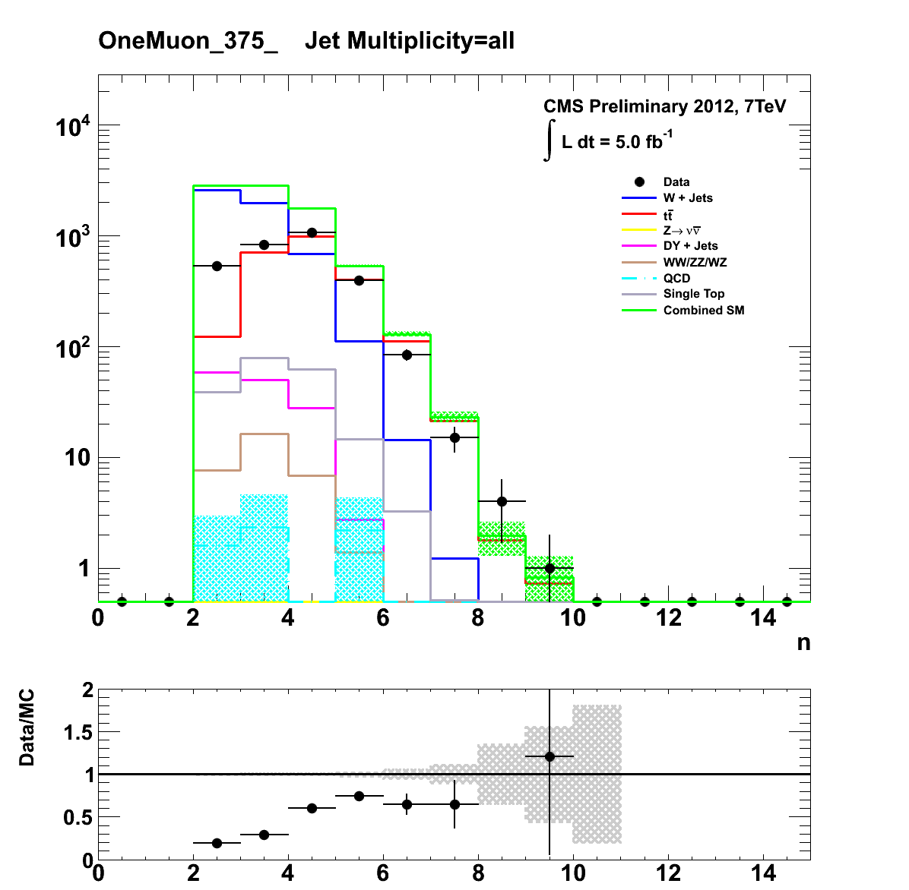
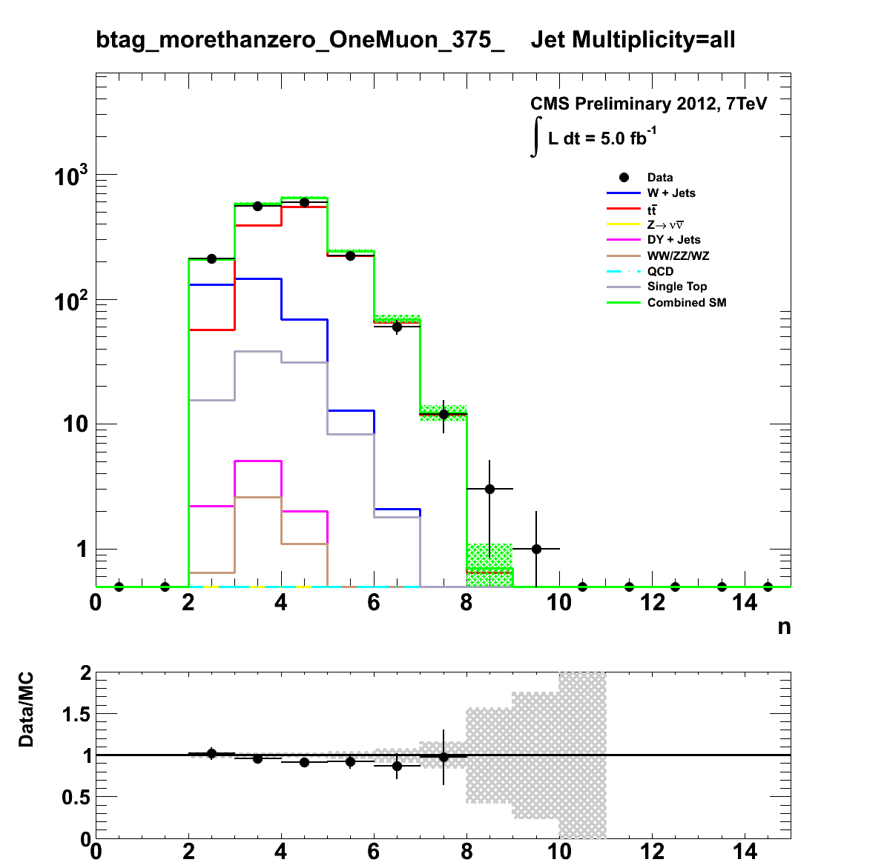

Author: Darren Burton <br> 
<script language="Javascript"> 
 document.write("Last Modified: " + document.lastModified + ""); 
 </script> <br> 
 <center>
 <p> 
 <font size="5"> OneMuon Plots </font>
 </p>
<font size="3">Results for JetMultiplicity_all_375_upwards </font><br> 
Hist Name: <a href="MHT_all_375_upwards.html">MHT_all</a>       |     <a href="AlphaT_all_375_upwards.html">AlphaT_all</a>       |     <a href="AlphaT_Zoomed_all_375_upwards.html">AlphaT_Zoomed_all</a>       |     <a href="JetMultiplicity_all_375_upwards.html">JetMultiplicity_all</a>       |     <br> 
<a href="JetMultiplicityAfterAlphaT_55_all_375_upwards.html">JetMultiplicityAfterAlphaT_55_all</a>       |     <a href="HT_all_375_upwards.html">HT_all</a>       |     <a href="HT_after_alphaT_55_all_375_upwards.html">HT_after_alphaT_55_all</a>       |     <a href="Btag_Pre_AlphaT_5__all_375_upwards.html">Btag_Pre_AlphaT_5__all</a>       |     <br> 
<a href="Btag_Post_AlphaT_5_55_all_375_upwards.html">Btag_Post_AlphaT_5_55_all</a>       |     <a href="EffectiveMass_after_alphaT_55_all_375_upwards.html">EffectiveMass_after_alphaT_55_all</a>       |     <a href="EffectiveMass_all_375_upwards.html">EffectiveMass_all</a>       |     <br> 
<br> 
HT Bins:  <a href="JetMultiplicity_all_375_upwards.html">375_upwards</a>     /    <br> 
<br> 
Change Evolution Type: <a href="JetMultiplicity_all_Zero.html">Btag Evolution</a><br> 
<br> 
 Toggle Full/Basic/Stacked Plots:<a href="Stacked_JetMultiplicity_all_375_upwards.html">   Stacked </a>     |     <a href="Simplified_JetMultiplicity_all_375_upwards.html">   Simplified </a><br> 
<br> 
 Return to Home Page:<a href="../RA1_Website_Plots.html"> Go </a><br><br><a href=JetMultiplicity_all_OneMuon_375_upwards.png></a> 
<a href=JetMultiplicity_all_btag_morethanzero_OneMuon_375_upwards.png></a> 
